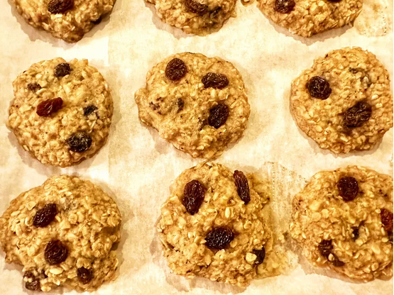

Banana Oatmeal Cookies

Description
These 3-ingredient banana oatmeal cookies—just oats, bananas, and
raisins—make a great alternative breakfast for when you're on the go, or
you can pack them in the kids’ lunch boxes for a healthier snack.
Ingredients
- ¾ cup mashed banan
- ½ cup rolled oats
- 3 tablespoons raisins
Steps
-
Preheat the oven to 350 degrees F° (180 degrees C°). Line a
baking sheet with parchment paper.
-
Stir bananas and oats together in a bowl until well combined. Stir in
raisins. Using a medium sized cookie scoop, drop dough onto the prepared
baking sheet. Using your fingers, gently pat down dough to form a round
cookie.
-
Bake in the preheated oven until beginning to brown on the bottom, 14 to
15 minutes. Cool on a wire rack.